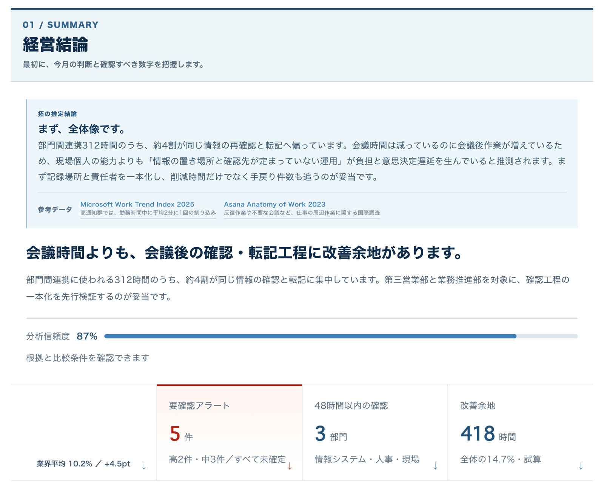
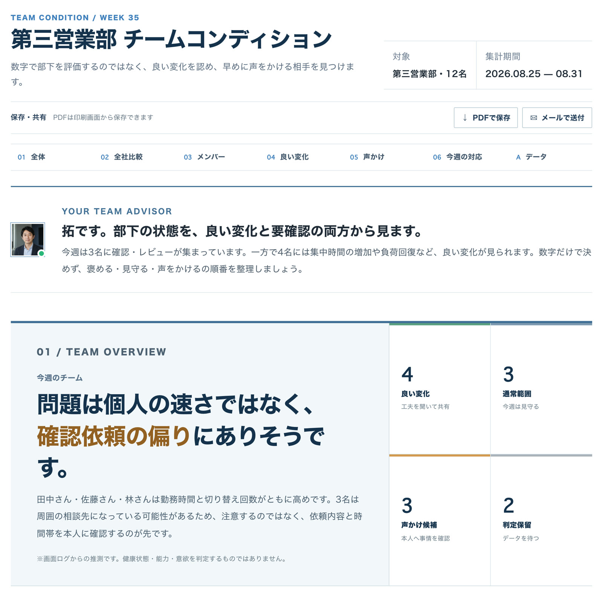
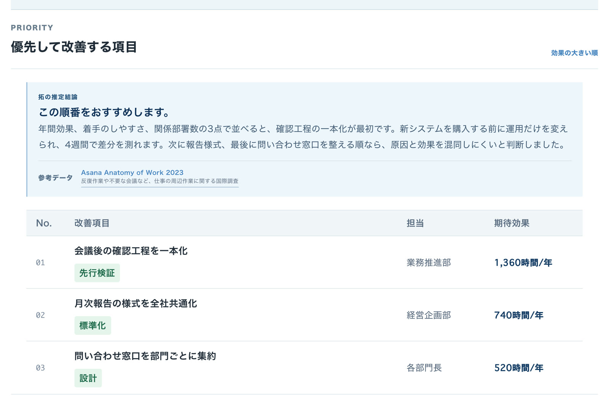
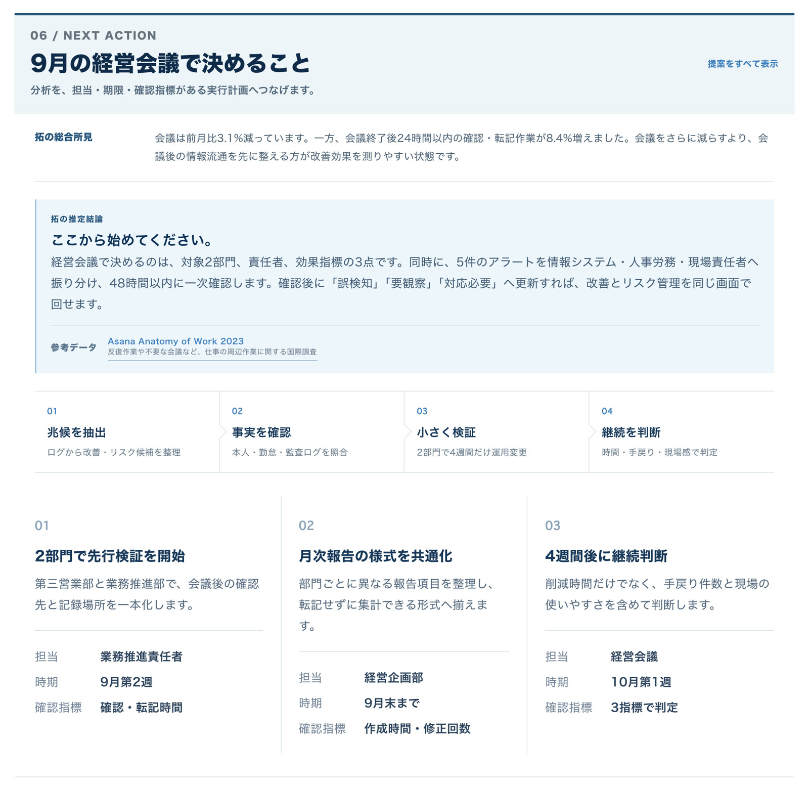
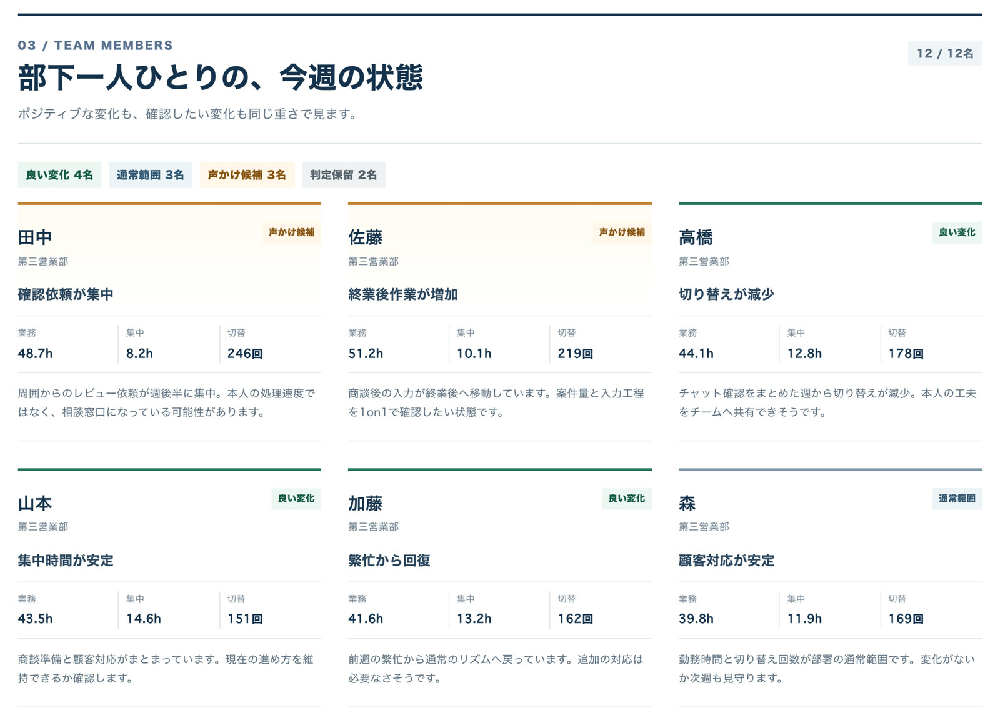
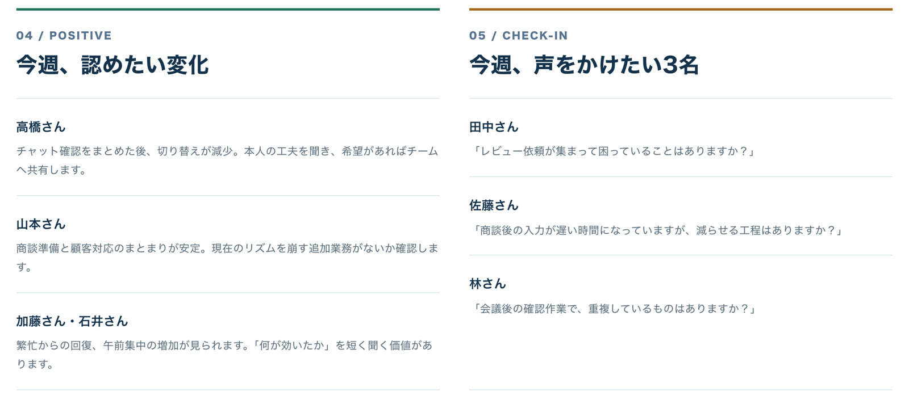
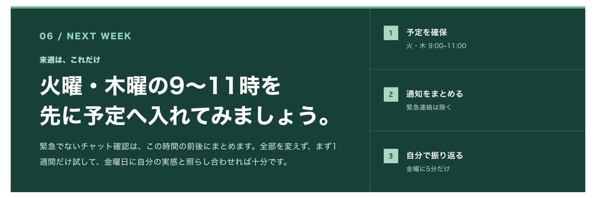
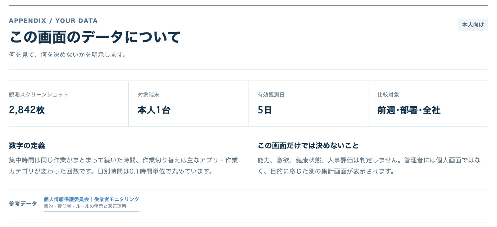

- 1分に1回画面を自動で記録
- 0件社員が新しく入力する作業
- 3つの立場経営者・管理職・本人に別々のレポート
- 1万円月額／1IDあたり
01Before AI
AIを入れたくても、どの仕事から手をつけるかが分からない。
AIの道具は増えました。けれど、社内のどの仕事に、誰が、何時間使っているかを、1分単位で測れている会社は多くありません。記憶や自己申告に頼ると、目につく業務や声の大きい部署から手をつけることになり、入れたAIが思ったほど時間を減らさない、ということが起こります。
印象で決める
- 勘と記憶
- 自己申告の工数
- 効果が読めないまま投資
事実で決める
- 1分ごとの実際の記録
- AIが業務ごとに分類
- 減らせる時間で優先順位
02How it works
パソコン画面を1分に1回記録し、AIが「誰が・どの業務に・何時間」を分析します。
やることは、専用のソフトを入れるだけ。あとはAIの業務コンサルタントが社内に常駐して、記録を読み、報告書を書いてくれるイメージです。
-
記録する
約1分に1回、画面を自動で記録します。日報や工数の入力は要りません。
-
AIが読み取る
「いつ・誰が・どの業務を・何時間」やっていたかを、AIが判定して集計します。
-
報告書が届く
減らせる時間と取り組みやすさで優先順位を付け、立場ごとの報告書にしてお届け。

- 結論から、文章で届くグラフを読み解く作業はAIの担当です。「会議時間よりも、会議後の確認・転記に改善余地があります」のように、まず結論を書きます。
- 根拠の強さも一緒に出す分析の信頼度や、推定であることを明記します。確定していないものは、確認が必要な項目として分けて出します。
- 次にやることまで並ぶ改善余地の時間と、確認すべき部門・順番まで。経営会議でそのまま使える形にまとめます。
画面は開発中のサンプルです。人物・数値・比較値は架空で、AIコンサルタントの人物と経歴も架空の設定です。

03Not surveillance
探すのは「遅い人」ではなく、「時間のかかる業務」です。
画面を記録する、というのはそのとおり。違いは、記録したあとに何をするかにあります。このサービスには、誰がサボっているかを探す画面はありません。
問題は個人の速さではなく、確認依頼の偏りにありそうです。
能力・意欲・健康状態・人事評価は、判定しません。04Reports
レポートは、経営者・管理職・本人に、別々に届きます。
同じ記録でも、経営者が知りたいことと、本人が知りたいことは違います。立場ごとに必要なことだけを取り出してお届けする仕組みです。
会社全体で、何に時間を使っているか。
全社の記録から、改善の余地が大きい順に並べます。どこから手をつけ、誰が担当し、何で効果を測るかまで一覧になります。
- 今月の経営結論
- 改善する項目の優先順位と、見込みの時間
- 確認が必要な点（アラート）
- 次の経営会議で決めること


チームのどこに、負担が偏っているか。
数字で部下を評価するためではありません。良い変化を認め、早めに声をかける相手を見つけるための画面です。
- チームの今週の状態
- 会社全体との比べ方
- 一人ひとりの良い変化と、気になる変化
- 今週、声をかけたい人と、その聞き方


自分の働き方を、自分で振り返る。
本人向けの画面は、評価のためのものではありません。うまくいった条件と、来週の小さな一歩を見つけるための振り返りです。日報も自動で書かれます。
- 今週の集中時間と、作業の切り替え回数
- 自分に合う働き方のタイプ
- 良かったこと・気をつけたいこと
- 来週、試してみること

「議事録の作成に、毎月26時間かかっています。議事録AIを使えば、約2時間まで短縮できる可能性があります。」
05From insight to action
分かって終わりではなく、楽にする方法まで提案します。
工数を測る道具は、ほかにもあります。違うのは、測ったあと。見つかった業務ごとに、4つの打ち手から合うものを提案します。
- AIツールで減らすその業務に合うAIを使って、作業そのものを短くします。
- 動画研修で身につける本人が自分で効率化できるように、使い方を学びます。
- システム開発で自動化する繰り返しの作業を、仕組みにして手を離します。
- BPOで外に任せる社内でやらない方が早い業務は、外に出します。
従来のやり方との違い
| 自己申告の工数管理 | 操作ログ型の管理ソフト | ワークログ インサイト | |
|---|---|---|---|
| 記録方法 | 社員が手で入力 | 操作を自動で取得 | 画面を1分ごとに記録 |
| 社員の手間 | 毎日の入力 | なし | なし |
| 使いみち | 工数の集計 | 労務管理・漏えい対策 | 業務の改善 |
| 記録の後 | 集計表 | 操作の記録と警告 | 楽にする方法の提案 |
| AIの材料 | 入力した文字 | 操作の記録 | 作業の画面そのもの |
左の2列は一般的な傾向です。製品によって機能は異なります。すでに工数管理の道具をお使いなら、集計はそちらで足りています。違いは「集計のあと」と「画面そのものが残ること」の2点です。
06Price
AIコンサルタントを雇う代わりに、月額1万円／1IDで。
人のコンサルタントに、継続して業務を見てもらうのは、中小企業には簡単ではありません。毎日の記録を読み続ける役目を、AIに任せます。
1万円／月・1ID
パソコン1台で、1日約600枚。その記録を、AIが毎日読みます。
月額に含まれるもの
- 1分に1回の画面の自動記録
- AIによる業務の判定と時間の集計
- 経営者・管理職・本人向けのレポート
- 本人向けの自動の日報
- AI化の候補と、楽にする方法の提案
- 閲覧範囲の設定（画像を開けない設定を含む）
削減できる時間はお約束できません。業務の内容によって変わるためです。提案された改善策（AIツールの導入・研修・開発・BPO）を実際に行う場合は、内容に応じて別途お見積りです。貯めた記録にあとから質問できる「ワークログ・ファクトサーチ」は別途有料のオプションです。消費税の扱い、初期費用、ご契約期間は、お見積りの際に書面でご確認ください。
07Security & rules
記録画像は、管理者でも開けない設定にできます。
そのうえで、5つのルールを先に決めます。
- 画面を記録約1分に1回
- 暗号化して保存クラウドに保存
- AIが読み取る業務と時間を判定
- 人は結果だけ見る画像を開けない設定も
- 保存記録した画像は、暗号化したうえでクラウドに保存。
- 見られる人人が閲覧できる範囲は、導入する会社ごとの設定です。
- 開けない設定管理者や経営者を含めて、記録画像を開けない設定を選べます。AIが解析した結果だけを見る使い方です。

そのために、導入の前に次の5つを、会社ごとに確認して決めます。
- 01取得する範囲どの部署・どのパソコンを記録するか
- 02閲覧権限誰が何を見られるか
- 03利用目的何のために使い、何に使わないか
- 04保存方法どこに、どのように保存するか
- 05私的情報の扱い私的な画面や機密情報をどう扱うか
人事評価に直接使わないのであれば、就業規則の改定は必要ありません。ご心配な場合は、顧問の社会保険労務士にご相談ください。
08Worklog archive
ここからが、もう1つの価値です。
仕事の記録が、今日から貯まっていきます。
パソコン1台で、1年に約15万枚。どのソフトを、どんな順番で使い、どこで手が止まっているか。社員1人分の仕事の進め方が、そのまま残ります。業務改善のレポートは、この記録の使いみちの1つです。
1分に1枚
1日10時間の場合
月20日の場合
パソコン1台あたり
1分に1枚・1日10時間・月20日で計算した目安です。稼働時間によって変わります。
09Why today
業務の記録は、あとから遡っては作れません。
AIが人の仕事を理解し、自動化できる範囲は、広がり続けています。それが半年後なのか、1年後なのか、2年後なのかは、まだ誰にも分かりません。
そのときAIに「うちの仕事を自動化してほしい」と頼むには、手掛かりが要ります。どのソフトを使い、どんな順番で進め、どこで時間がかかり、何を繰り返しているのか。
画面の記録だけで、あらゆる業務を自動化できるとお約束するものではありません。ただ、1年後に慌てて始めても、過去1年分の記録は取り戻せません。
貯めた記録には、あとから日本語で質問することもできます。ワークログ・ファクトサーチ（別途有料のオプション）
10Before you apply
対象はWindowsのパソコンです。
お申し込みの前にご確認ください。
パソコンを使わない社員の方が多い会社でも、パソコンで仕事をしている部署だけで始められます。全社に入れるものではありません。
記録できる
- Windowsのパソコンで仕事をしている部署
- たとえば、事務・経理・営業事務・管理部門
記録できない
- Macのパソコン（対応していません）
- 現場や店舗など、パソコンの前にいない時間
11How to start
全社一斉ではなく、社員の3分の1、1部署から始めます。
- ご相談対象にする部署と人数を決めます。目安は社員の3分の1くらいです。
- 5つのルールを決め、社員へ説明取得する範囲・閲覧権限・利用目的・保存方法・私的情報の扱いを決めてから始めます。
- ソフトを入れる対象のWindowsパソコンに入れれば、あとは自動で記録されます。
- 1か月分のレポートを見る届くのは、経営者・管理職・本人の3種類です。
- 広げるかどうかを決める1か月分を見てから、対象を広げるかどうかを決めていただけます。
1/3から始める理由
いきなり全員分だと、届いたレポートを見る側が追いきれません。社員の3分の1くらいあれば、部署ごとの違いが見えて、比べられるようになります。
Q&AQuestions
よくいただくご質問
要するに、社員の監視ツールではないのですか。
画面を記録するという意味では、おっしゃるとおりです。ただ、誰がサボっているかを探す画面はありません（03）。記録画像は、管理者でも開けない設定にできます（07）。
社員が嫌がりませんか。
黙って入れると、監視だと受け取られます。ですので、入れる前に「何を記録するか・誰が見られるか・何に使うか」を決めて、社員の皆さんへ説明してから始めます。本人の画面には本人のための振り返りが届くので、自分の働き方を見るための道具として受け取っていただけます。
工数管理のツールは、もう入れています。
その場合、時間の集計はすでに出ているはずです。ワークログ・インサイトが違うのは、集計したあと。その業務はどのAIツールで減らせるのか、研修で本人ができるようになるのか、開発した方がいいのか、外に出した方がいいのかまで提案します。もう1つは、入力ではなく作業の画面そのものが残ることです。
効果はどれくらい出ますか。
削減できる時間をお約束することはできません。業務の内容によって変わるためです。比べていただきたいのは、業務を棚卸しして、どこを効率化できるかを人に継続して見てもらった場合の手間と費用です。
Macでも使えますか。
現在はWindowsのパソコンのみの対応で、Macには対応していません。
NextStart with one team
迷っている間の仕事は、記録に残りません。
まずは1部署から。
全社で決める前に、1部署の数台だけ先に始めておくこともできます。対象の部署と人数から、一緒に決めましょう。
導入の相談をする月額1万円／1ID・Windowsのパソコンが対象です